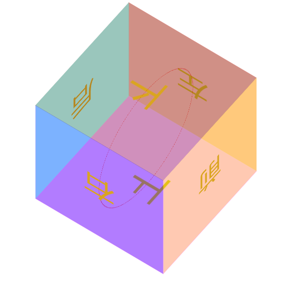

—## 本文主要内容：
transition的中文含义是过渡。过渡是CSS3中具有颠覆性的一个特征，可以实现元素不同状态间的平滑过渡（补间动画），经常用来制作动画效果。
补间动画：自动完成从起始状态到终止状态的的过渡。不用管中间的状态。
帧动画：通过一帧一帧的画面按照固定顺序和速度播放。如电影胶片。
transition 包括以下属性：
transition-property: all;如果希望所有的属性都发生过渡，就使用all。transition-duration: 1s;过渡的持续时间。transition-timing-function: linear;运动曲线。属性值可以是：linear线性ease减速ease-in加速ease-out减速ease-in-out先加速后减速
transition-delay: 1s;过渡延迟。多长时间后再执行这个过渡动画。
上面的四个属性也可以写成综合属性：
1 | transition: 让哪些属性进行过度 过渡的持续时间 运动曲线 延迟时间; |
其中，transition-property这个属性是尤其需要注意的，不同的属性值有不同的现象。我们来示范一下。
如果设置 transition-property: width，意思是只让盒子的宽度在变化时进行过渡。
如果设置 transition-property: all，意思是让盒子的所有属性（包括宽度、背景色等）在变化时都进行过渡。
2D 转换
转换是 CSS3 中具有颠覆性的一个特征，可以实现元素的位移、旋转、变形、缩放，甚至支持矩阵方式。
转换再配合过渡和动画，可以取代大量早期只能靠 Flash 才可以实现的效果。
在 CSS3 当中，通过 transform 转换来实现 2D 转换或者 3D 转换。
- 2D转换包括：缩放、移动、旋转。
我们依次来讲解。
1、缩放：scale
格式：
1 | transform: scale(x, y); |
参数解释： x：表示水平方向的缩放倍数。y：表示垂直方向的缩放倍数。如果只写一个值就是等比例缩放。
取值：大于1表示放大，小于1表示缩小。不能为百分比。
2、位移：translate
格式：
1 | transform: translate(水平位移, 垂直位移); |
参数解释：
参数为百分比，相对于自身移动。
正值：向右和向下。 负值：向左和向上。如果只写一个值，则表示水平移动。
应用：让绝对定位中的盒子在父亲里居中
我们知道，如果想让一个标准流中的盒子在父亲里居中（水平方向看），可以将其设置margin: 0 auto属性。
可如果盒子是绝对定位的，此时已经脱标了，如果还想让其居中（位于父亲的正中间），可以这样做：
1 | div { |
现在，我们还可以利用偏移 translate 来做，这也是比较推荐的写法：
1 | div { |
3、旋转：rotate
格式：
1 | transform: rotate(角度); |
参数解释：正值 顺时针；负值：逆时针。
我们给盒子设置了 transform 中的 rotate 旋转，但同时还要给盒子设置 transition 过渡。如果没有这行过渡的代码，旋转会直接一步到位。
rotate 旋转时，默认是以盒子的正中心为坐标原点的。如果想改变旋转的坐标原点，可以用
transform-origin属性。格式如下：
1 | transform-origin: 水平坐标 垂直坐标; |
：
4、倾斜
暂略。
3D 转换
1、旋转：rotateX、rotateY、rotateZ
旋转的方向：（左手法则）
左手握住旋转轴，竖起拇指指向旋转轴的正方向，正向就是其余手指卷曲的方向。
从上面这句话，我们也能看出：所有的3d旋转，对着正方向去看，都是顺时针旋转。
格式：
1 | transform: rotateX(360deg); //绕 X 轴旋转360度 |
2、移动：translateX、translateY、translateZ
格式：
1 | transform: translateX(100px); //沿着 X 轴移动 |
3、透视：perspective
电脑显示屏是一个 2D 平面，图像之所以具有立体感（3D效果），其实只是一种视觉呈现，通过透视可以实现此目的。
透视可以将一个2D平面，在转换的过程当中，呈现3D效果。但仅仅只是视觉呈现出 3d 效果，并不是正真的3d。
格式有两种写法：
作为一个属性，设置给父元素，作用于所有3D转换的子元素
作为 transform 属性的一个值，做用于元素自身。
格式举例：
1 | perspective: 500px; |
4、3D呈现（transform-style）
3D元素构建是指某个图形是由多个元素构成的，可以给这些元素的父元素设置transform-style: preserve-3d来使其变成一个真正的3D图形。属性值可以如下：
1 | transform-style: preserve-3d; /* 让 子盒子 位于三维空间里 */ |
案例：立方体
1 |
|

动画
动画是CSS3中具有颠覆性的特征，可通过设置多个节点 来精确控制一个或一组动画，常用来实现复杂的动画效果。
1、定义动画的步骤
（1）通过@keyframes定义动画；
（2）将这段动画通过百分比，分割成多个节点；然后各节点中分别定义各属性；
（3）在指定元素里，通过 animation 属性调用动画。
之前,我们在 js 中定义一个函数的时候，是先定义，再调用：
1 | js 定义函数： |
同样，我们在 CSS3 中定义动画的时候，也是先定义，再调用：
1 | 定义动画： |
其中，animation属性的格式如下：
1 | animation: 定义的动画名称 持续时间 执行次数 是否反向 运动曲线 延迟执行。(infinite 表示无限次) |
2、动画属性
我们刚刚在调用动画时，animation属性的格式如下：
animation属性的格式如下：
1 | animation: 定义的动画名称 持续时间 执行次数 是否反向 运动曲线 延迟执行。(infinite 表示无限次) |
可以看出，这里的 animation 是综合属性，接下来，我们把这个综合属性拆分看看。
（1）动画名称：
1 | animation-name: move; |
（2）执行一次动画的持续时间：
1 | animation-duration: 4s; |
备注：上面两个属性，是必选项，且顺序固定。
（3）动画的执行次数：
1 | animation-iteration-count: 1; //iteration的含义表示迭代 |
属性值infinite表示无数次。
（3）动画的方向：
1 | animation-direction: alternate; |
属性值：normal 正常，alternate 反向。
（4）动画延迟执行：
1 | animation-delay: 1s; |
（5）设置动画结束时，盒子的状态：
1 | animation-fill-mode: forwards; |
属性值： forwards：保持动画结束后的状态（默认）， backwards：动画结束后回到最初的状态。
（6）运动曲线：
1 | animation-timing-function: ease-in; |
属性值可以是：linear ease-in-out steps()等。
注意，如果把属性值写成steps()，则表示动画不是连续执行，而是间断地分成几步执行。我们接下来专门讲一下属性值 steps()。
steps()的效果
我们还是拿上面的例子来举例，如果在调用动画时，我们写成：
1 | animation: move2 4s steps(2); |
有了属性值 steps()，我们就可以作出很多不连续地动画效果。比如时钟；再比如，通过多张静态的鱼，作出一张游动的鱼。
step()举例：时钟的简易模型
1 |
|
上方代码，我们通过一个黑色的长条div，旋转360度，耗时60s，分成60步完成。即可实现。